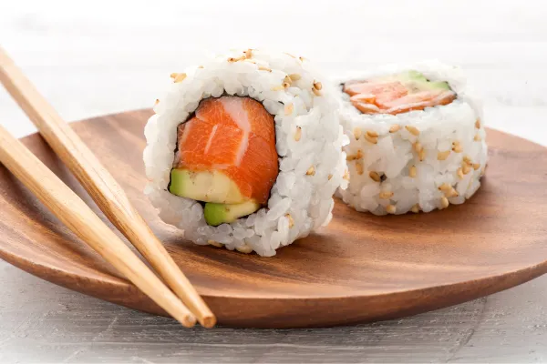

Sushi Hero´s
Menú

Sushi del mes
El sushi de salmón y aguacate es una combinación clásica que ofrece una armonía perfecta entre la suavidad del salmón y la cremosidad del aguacate.
¿Quieres saber cómo lo preparamos?
Receta sushi del mes
TOP 3: Mejores Sushi's
Sushi de salmón y aguacate
Sushi tempura de langostinos
Sushi vegano de aguacate y pepino (Versión vegetariana)
Pedidos
Dirección:
Teléfono: